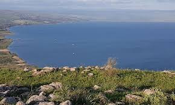

Palestine
Galilee Brigade
Akko
Location of the city of Akko The city of Akko is located in the northwestern side of Palestine, and is distinguished by its location along the Mediterranean coast on the northern end of Haifa Bay, formerly known as the Bay of Akko. Thus, the city of Akko has an important strategic location, as it connects the east with commercial activity and corridors. It is considered one of the historical cities included in the UNESCO World Heritage Site
Landmarks of the city of Akko The city of Akko contains several distinctive historical places, perhaps the most important of which are the following: Gardens of Bahja: Located 2 kilometers north of Akko, it contains the tomb of the founder of the Baha’i religion, Baha’u’llah. Al-Jazzar Wall: It was erected 15 meters from the inner wall of the city, and consists of nine watchtowers. The most important of these towers are the following: Karim Tower, Sultan Tower, and Commander’s Tower. It is noteworthy that these walls included huge artillery emplacements during the French siege, and the number of The cannons were 250, and these walls proved their steadfastness and immunity in the face of Napoleon's siege of the city. The Shrine of the Prophet Saleh: This shrine is located in the Islamic cemetery south of Akko. The shrines of the three martyrs executed by the British: Fuad Hijazi, Muhammad Jamjoum, and Atta Al-Zeer.


Nazareth
Nazareth ,is the largest city in the Northern District of Israel. In 2022 its population was 78,007. Known as "the Arab capital of Israel", Nazareth serves as a cultural, political, religious, economic and commercial center for the Arab citizens of Israel, as well as a center of Arab and Palestinian nationalism. The inhabitants are predominantly Arab citizens of Israel, of whom 69% are Muslim and 30.9% Christian. The city also commands immense religious significance, deriving from its status as the hometown of Jesus, the central figure of Christianity and a prophet in Islam.
Findings unearthed in the neighboring Qafzeh Cave show that the area around Nazareth was populated in the prehistoric period. Nazareth was a Jewish village during the Roman and Byzantine periods and is described in the New Testament as the childhood home of Jesus. It became an important city during the Crusades after Tancred established it as the capital of the Principality of Galilee. The city declined under Mamluk rule, and following the Ottoman conquest, the city's Christian residents were expelled, only to return once Fakhr ad-Dīn II granted them permission to do so. In the 18th century, Zahir al-Umar transformed Nazareth into a large town by encouraging immigration to it. The city grew steadily during the late 19th and early 20th centuries, when European powers invested in the construction of churches, monasteries, educational and health facilities.
Since late antiquity, Nazareth has been a center of Christian pilgrimage, with many shrines commemorating biblical events. The Church of the Annunciation is considered one of the largest Christian sites of worship in the Middle East. It contains the Grotto of the Annunciation, where, according to Catholic tradition, angel Gabriel appeared to Mary and announced that she would conceive and bear Jesus. According to Greek Orthodox belief, the same event took place at the Greek Orthodox Church of the Annunciation, also known as Church of Saint Gabriel. Other important churches in Nazareth include the Synagogue Church, St. Joseph's Church, the Mensa Christi Church, and the Basilica of Jesus the Adolescent.


Beisan
is believed to be one of the oldest cities in the region. It has played an important role in history due to its geographical location at the junction of the Jordan River Valley and the Jezreel Valley. Beth She'an's ancient tell contains remains beginning in the Chalcolithic period. When Canaan came under Imperial Egyptian rule in the Late Bronze Age, Beth She'an served as a major Egyptian administrative center. The city came under Israelite rule in the monarchic period. It probably fell under Philistine control during the time of Saul, when, according to the Bible, his body was displayed there along with his sons.
During the Hellenistic period, the settlement was known as Scythopolis . After the region came under Roman rule, Scythopolis gained imperial free status and was the leading city of the Decapolis. A multi-cultural metropolis under Byzantine rule, it served as the capital of the province of Palaestina Secunda, and had a mixed population of Christians, pagans, Jews and Samaritans. After the Arab conquest of the Levant, and following a series of devastating earthquakes (most notably in 749), the city lost its prominence, and became a medium-sized country town.
The population of the town was completely changed from 1948 to 1950. It had been entirely Muslim and Christian, designated to be part of the Jewish state in the 1947 United Nations Partition Plan for Palestine, and was captured by the Haganah in May 1948. The battle over the town during Operation Gideon caused most of its inhabitants to flee, and the remainder were expelled. The town was then resettled by Jewish immigrants. Today, Beit She'an serves as a regional centre for the towns in the Beit She'an Valley. The ancient city ruins are now protected within the Beit She'an National Park. The town is located near the Jordan River Crossing, one of three crossing points between Israel and Jordan.
Geography
Ancient ruins of Beit She'an
Beit She'an's location has always been strategically significant, due to its position at the junction of the Jordan River Valley and the Jezreel Valley, essentially controlling access from Jordan and the inland to the coast, as well as from Jerusalem and Jericho to the Galilee.
Beit She'an is situated on Highway 90, the north–south road which runs the length of the eastern edge of Israel and the West Bank. The city stretches over an area of 7 square kilometers with a substantial national park in the north of the city. Beit She'an has a population of 20,000.
Today the town is under the administration of the Emek HaMa'ayanot Regional Council.


Tiberia
Tiberias or Tiberias is one of the oldest historical cities in Palestine, located today in the Northern District of Israel, specifically in the eastern Galilee region, on the southwestern shore of the lake that bears its name - Lake Tiberias. It is about 198 km northeast of Jerusalem. Today, it is inhabited by about 46 thousand people - most of them Jews, after the displacement of its Arab inhabitants due to the 1948 war. The city is one of the four holy cities in the Jewish religion.
History
A gate in the city walls in 1849.
Tiberias Mosque.
The city of Tiberias was founded in 20 AD near the remains of the Canaanite city of Raqqa by the Roman ruler Herod, who was one of the sons of Herod the Great. Herod Antipas named the city after the Roman Emperor Tiberius Caesar (I). The city has become a winter resort for many due to the fertility of its land and its hot springs.
After the construction of the city of Tiberias, this city flourished, especially after Herod's interest in it, as he saw it as the only defensive site around the lake, and this is the reason that prompted Herod to build a castle near the shore of the lake, in addition to the proximity of Tiberias to the Roman baths that the Romans cared about a lot, as it added splendor to the importance of the city after its establishment.
In the year 13 AH - 634 AD, the Muslims conquered it under the leadership of Shurahbil bin Hasna and it became the capital of the Jordan Army and the Arabs inhabited it and remained in it.
During the Crusades, Tancred occupied the city by order of Godfrey and after its Muslim residents were displaced from it, he fortified it so that it would be the center of his emirates, and in the year 583 AH - 1187 AD, Saladin was able to regain the city after his victory over the Crusaders in the Battle of Hattin, but the Crusaders were able to control the city again after King Al-Salih Ismail, the governor of Damascus, handed it over to them in exchange for their support against the King of Egypt, Al-Salih Ayyub, and Al-Nasir Dawud in Jordan in 1240 AD. In 1247 AD, the Muslims were able to reclaim the city, but it lost much of its construction and importance due to the massive destruction that occurred as a result of the Crusader and Mongol invasions, which made the city on the verge of extinction to be replaced by Beisan and Hattin.
Tiberias at the beginning of the twentieth century.
In 1517 AD, the Ottomans were able to control the city, and then it was ruled by Zahir al-Umar, the governor of Sidon in 1730. During the Ottoman era, Tiberias became the center of the Tiberias district, one of the four districts that make up the Acre district. The importance of the city of Tiberias disappeared after that, and in 1799, Napoleon Bonaparte seized it during his campaign in Egypt and the Levant, and then it was subjected to Egyptian rule after that, and it flourished, so its baths were repaired and it began to receive visitors from outside the country to recover from its mineral waters, then the city was severely damaged by the earthquake that struck the city in early 1837, and Tiberias was exposed to a series of earthquakes in several years.
City landmarks
The Ottoman Saraya building in the city center.
The city has many historical landmarks that show the antiquity of the city, including the remains of mosques, churches, and temples, in addition to architectural monuments such as the Saraya, domes, springs, and others. The most prominent landmarks are: 1. The Great Mosque: Built by Zahir al-Umar al-Zaydani in the eighteenth century AD, known as the Zaydani Mosque or the Upper Mosque, located in the northern neighborhood of Tiberias. 2. The Bridge Mosque: Located in the western neighborhood on the shore of the lake, 3. The Sea Mosque: Located on the shore of Lake Tiberias, there are the walls of the old city and other Roman ruins. 4. The warm baths are one of the most prominent landmarks of the city, which many visitors flock to for treatment with its mineral waters.



Back